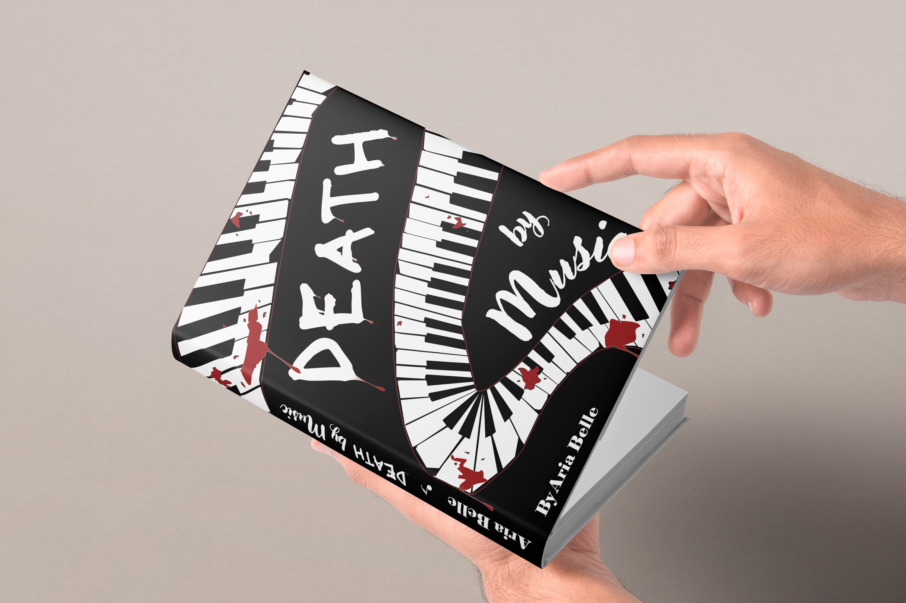
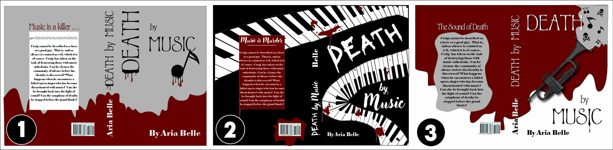
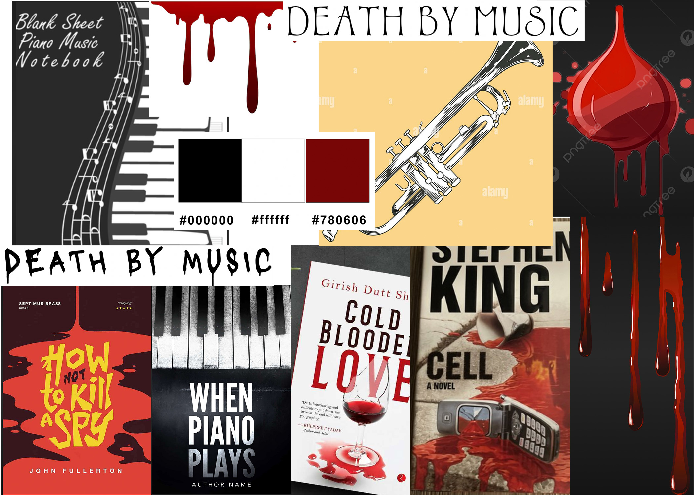

CLIENT
Aria Belle (fic)
ROLE
Book Cover Designer
DELIVERABLES
Title Development
Book Concept Development
Cover Design
Spine & Back Cover Design
YEAR
2025
PROJECT OVERVIEW
Death By Music is a conceptual book cover design project created for fictional author Aria Belle. The story follows a villain who believes he can create a better musical world by eliminating performers he considers unworthy, using music and instruments as the tools behind each crime.
The goal was to create a cover design that captures the contrast between artistic passion and psychological darkness while introducing the complexity of a main character who views himself as both an artist and an executioner. The project explores how typography, imagery, and composition can communicate genre, tone, and character before the reader opens the book.
DESIGN APPROACH
The visual direction focuses on creating tension between elegance and danger. Typography, imagery, and layout choices were developed to reflect the relationship between music, obsession, and villainy while creating a memorable editorial design system for the front cover, spine, and back cover.

Cover exploration showcasing multiple design directions, typography studies, and visual concepts developed for Death By Music.

Cover exploration showcasing multiple design directions, typography studies, and visual concepts developed for Death By Music.

Publication design development exploring alternate visual directions.

Placeholder.